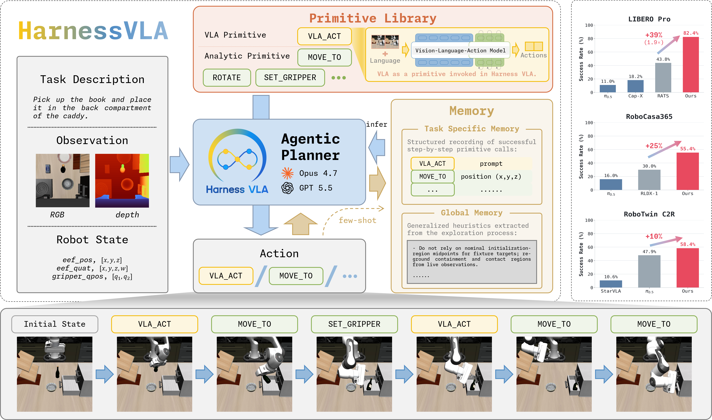
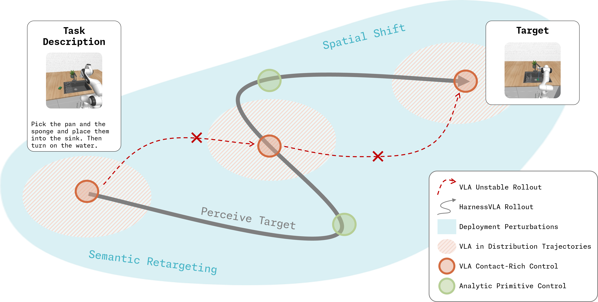
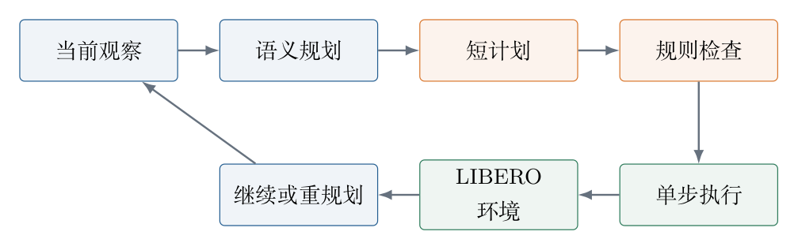
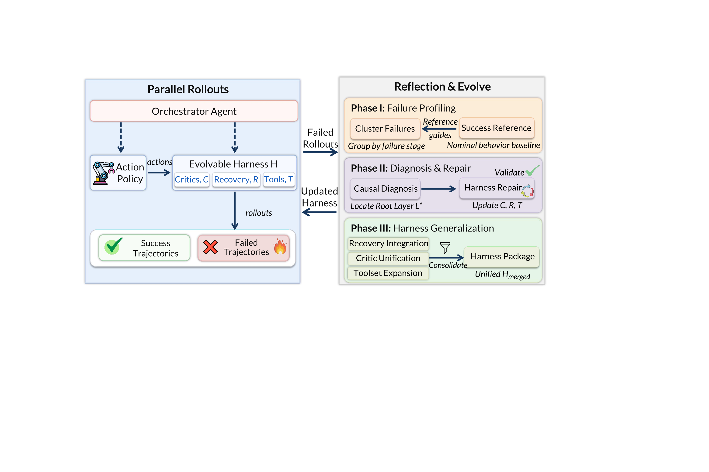
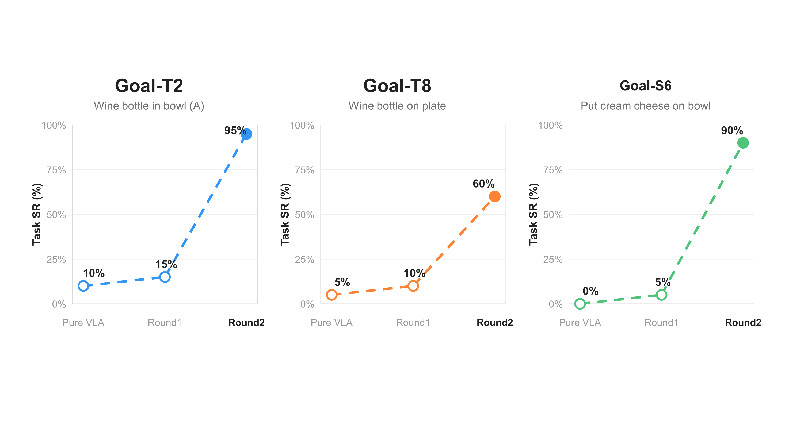
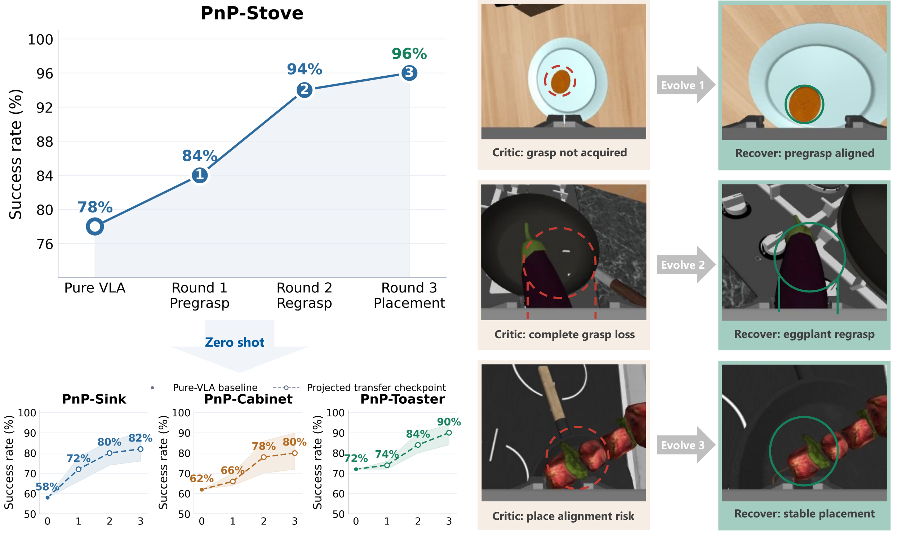

冻结 VLA 的分层控制、失败恢复与闭环自进化
说明
近期我学习并复现了 HarnessVLA 和 Zetta。具体工作包括：梳理 HarnessVLA 的分层控制框架，在此基础上重新组织规划与执行模块并进行对照实验；随后复现 Zetta 的 harness 自进化流程。本文集中记录两套架构的核心机制、值得关注的现象及本地实验结果。
1 研究动机
VLA在语义理解，长时稳定性和泛化性上现在做的比较差，而基于llm的agent在这些方面都做得比较好，因此自然的想法就是将两者结合起来。由agent去规划，判断，由VLA去执行。
2 HarnessVLA：episode 内的分层控制
2.1 核心架构
VLA 被封装为处理接触动作的 vla_act；定位、移动、旋转、夹爪和释放由解析原语完成。Task Specific Memory 保存当前任务的成功示例，Global Memory 存放通用规则和失败模型。planner 负责选择原语及其调用时机。


论文报告的标准 LIBERO 成绩是 384/400（96.0%），同一冻结 \(\pi_{0.5}\) checkpoint 的直接基线是 95.3%。在分布偏移更强的任务上，LIBERO-Pro 的 Codex 与 CC 版本分别为 72.1% 和 82.4%，RoboCasa365 为 57.1%，RoboTwin C2R 为 58.4%。
2.2 规划与执行的进一步解耦
但是在复现过程中，我发现harnessvla的耗时特别久，超过2/3的时间都是agent推理消耗掉了，因为每执行一段primitive，就执行一次agent推理。
但是很多primitive，比如move_to,都是很简单且确定性的primitive。因此我做了一个简单的优化：“每执行一段primitive，就执行一次agent推理”换成“每执行一串primitive，就执行一次agent推理”。并且做了仿真测试

2.3 实验结果
实验覆盖四个 LIBERO suite，每个 suite 包含 24 个 episode（表 1）。
表 1 原始架构与分层架构在四个 LIBERO suite 上的结果。
| 架构 | LIBERO-Spatial | LIBERO-Object | LIBERO-Goal | LIBERO-10 |
|---|---|---|---|---|
| 原始架构 | 20/24（83%） | 24/24（100%） | 18/24（75%） | 18/24（75%） |
| 新架构 | 21/24（88%） | 24/24（100%） | 15/24（63%） | 10/24（42%） |
新架构的平均 episode、成功 episode 和视频时长分别减少 32.8%、42.5% 和 46.4%（表 2）。
表 2 96 个 episode 的总体成功率与时间统计。
| 架构 | 成功率 | episode 平均耗时 | 成功 episode 平均耗时 | 平均视频时长 |
|---|---|---|---|---|
| 原始架构 | 80/96（83.3%） | 286.0 s | 222.1 s | 23.7 s |
| 新架构 | 70/96（72.9%） | 192.3 s | 127.8 s | 12.7 s |
表 3 按 planner 模型拆分的 72-episode 子集。
| 模型 | 架构 | 成功率 | episode 平均耗时 | 成功 episode 平均耗时 | 平均视频时长 |
|---|---|---|---|---|---|
| Sol | 原始架构 | 22/24（92%） | 326.2 s | 303.2 s | 25.2 s |
| Sol | 新架构 | 21/24（88%） | 212.3 s | 200.0 s | 12.9 s |
| Terra | 原始架构 | 18/24（75%） | 295.1 s | 247.0 s | 24.6 s |
| Terra | 新架构 | 15/24（63%） | 201.6 s | 188.4 s | 12.6 s |
| Luna | 原始架构 | 12/24（50%） | 234.5 s | 221.3 s | 16.2 s |
| Luna | 新架构 | 5/24（20%） | 192.1 s | 127.4 s | 10.24 s |
这些数据反映出明确的架构取舍：短计划和逐步反馈降低了执行耗时，同时提高了系统对 planner 判断能力的依赖。不同 suite 和不同模型之间的差异与这一机制一致。
可以看到新架构确实比旧架构要耗时更短，但是代价是需要更强的模型去保持成功率不降低。
然后我注意到了“zetta”这篇文章，他实现了自进化的harness，在成功率和推理速度上都比harnessvla要强很多，因此我的兴趣转向了zetta，而不是继续在harnessvla上做一些小改进了。
3 Zetta：跨 episode 的 harness 更新
3.1 自进化的对象
Zetta 同样冻结 VLA，更新对象是外层 harness：
其中 \(C\) 是 critic，\(R\) 是 recovery playbook，\(\mathcal T\) 是工具集。整个更新有三层：
- 每个动作后运行 critic，必要时触发 recovery；
- 每批轨迹结束后聚类失败、诊断原因并生成候选修复；
- 每轮只把能在新场景中复现的修复写回 \(\mathcal H\)。

Zetta 首先判断问题位于评价、状态估计、规划还是恢复层，再生成局部修改。候选修复先在已有轨迹上回放，再进入环境测试，并在新场景中验证。只有通过全部检查的修改才会并入正式 harness。因此，这里的“自进化”是验证门控的 code update，而不是无约束的自然语言反思。
3.2 顿悟与泛化
论文中，LIBERO-Pro 的成功率随迭代由 34.5% 提升至 90.8%，RoboCasa 由 73.6% 提升至 93.6%；agent inference latency 相对 RPent 降低 91%。

有趣的是，发现自进化有一个“顿悟”的现象，这和llm中的“grokking”很像：加入 grasp-retention critic 后，成功率由 15% 升至 95%；补充 contact–grasp–retention recovery 后，由 10% 升至 60%；修正接近物体的几何关系后，则由 5% 升至 90%。论文将其称为 Aha moment。VLA 并未突然获得新的动作能力；harness 只是识别并修复了控制终局成败的关键状态变量。当多个轨迹共享同一瓶颈时，单点修复便会表现为成功率跃迁。
并在在顿悟之后，和llm很像，模型的额泛化性也得到了大幅提升。抓取前定位、抓取保持和重试规则迁移到相关任务后，其中一个任务由 9/20 提升至 20/20；RoboCasa 的跨任务宏平均由 64% 提升至 84%。迁移对象并非固定轨迹，而是 alignment、contact、grasp retention 和 relation satisfaction 等物理条件。
